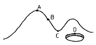
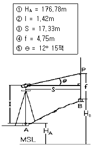
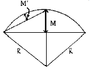
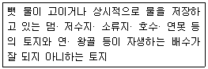

지적산업기사 (2004-08-08 기출문제)
1과목: 지적측량
1. 다각망도선법에 의한 지적삼각보조측량을 시행할 경우에 도선별 연결오차의 한계는? (단, S는 기지점과 교점간 점간거리 총합계를 1000으로 나눈값임.)
- 0.5× S 미터 이하
- 0.⑤× S 미터 이하
- 5× S 미터 이하
- 50× S 미터 이하
(정답률: 알수없음)

2. 항공사진측량을 지적측량에 활용하는 이유로 가장 거리가 먼 것은?
- 상대오차가 적어 비교적 성과가 균일하다.
- 대단위 지역의 측량을 빨리 완성할 수 있다.
- 다목적상의 입장에서 경제적이다.
- 현장보조 측량이 필요하지 않아 간편하다.
(정답률: 알수없음)
3. 공업단지조성사업의 공사를 완료하고 새로이 지적공부를 조제하기 위하여 실시하는 측량은?
- 등록전환측량
- 신규등록측량
- 축척변경측량
- 지적확정측량
(정답률: 알수없음)
4. 축척 1/600 지적도를 기초로 도곽의 규격이 동일한 축척 1/3,000의 지번도를 제작하려 할 때 지번도 1매를 만들기 위해서는 지적도 몇 매가 있어야 하는가?
- 5매
- 10매
- 20매
- 25매
(정답률: 알수없음)
5. 세부측량을 측판측량방법으로 실시하는 경우 측량준비도에 기재할 사항이 아닌 것은?
- 인근토지의 경계선
- 지적측량 기준점
- 도곽선 및 도곽선수치
- 측정점 위치 설명도
(정답률: 알수없음)
6. 세부측량을 측판측량에 의한 도선법으로 실시할 경우 도선의 측선장은 도상길이 얼마 이하로 제한 하는가?
- 6cm
- 8cm
- 10cm
- 12cm
(정답률: 알수없음)
7. 지적측량을 기초측량과 세부측량으로 구분할 때 기초측량의 범위로 가장 알맞은 것은?
- 측판측량, 지적도근측량
- 대삼각본점, 경위의측량
- 지적도근측량, 지적삼각측량, 지적삼각보조측량
- 수준측량, 다각측량
(정답률: 알수없음)
8. 지적법에서 규정하고 있는 필지에 대한 면적측정대상이 아닌 것은?
- 지적공부 복구
- 신규등록
- 축척변경
- 지목변경
(정답률: 알수없음)
9. 도선법에 의한 지적도근측량시 일반적인 조건하에서의 1도선의 점의 수는?
- 10점 이하로 한다.
- 30점 이하로 한다.
- 40점 이하로 한다.
- 60점 이하로 한다.
(정답률: 60%)
10. 측량결과 시오삼각형이 생긴때에는 내접원의 지름이 몇 ㎜ 이하일 때 그 중심점을 점의 위치로 하는가?
- 5
- 3
- 2
- 1
(정답률: 알수없음)
11. 지적도근측량을 다각망도선법으로 시행할 때 기지점의 최소한 수량은?
- 2점
- 3점
- 4점
- 6점
(정답률: 50%)
12. 두 점간의 실거리 300m를 도상 6㎜로 표시한 도면의 축척은?
- 1/20,000
- 1/25,000
- 1/50,000
- 1/100,000
(정답률: 80%)
13. 극좌표의 계산에서 A점의 좌표가 (100,100), B점의 좌표가 (90,1⑤)일 때 AB의 방위각은?
- 26° 33′ 54″
- 63° 26′ 06″
- 153° 26′ 06″
- 206° 33′ 54″
(정답률: 알수없음)
14. 축척 1/600지역에서 어느 지적도근점의 종선좌표가 X=4534⑤.88m일 때 이 점이 위치하는 지적도 도곽선의 종선 수치로 옳게 짝지어진 것은?
- 453600m - 453400m
- 453550m - 453350m
- 453500m - 453300m
- 453450m - 453250m
(정답률: 30%)
15. 축척 1/6,000 임야도 시행지역의 임야를 인접농촌지역 지적도로 등록전환할 때 적합한 지적도의 축척은?
- 1/500
- 1/600
- 1/1,200
- 1/2,400
(정답률: 알수없음)
16. 지적도근측량시 방위각법에 의할 때 1등 도선의 방위각 폐색오차의 한계는? (단, n 은 폐색변을 포함한 변수임)
- ± √n 분 이내
- ± 1.5√n 분 이내
- ± 2√n 분 이내
- ± 3√n 분 이내
(정답률: 60%)
17. 필지별 면적결정에 대한 설명으로 옳은 것은?
- 면적단위는 척관법으로 한다.
- 1필지의 면적이 1제곱미터 미만인 경우 버린다.
- 경계점좌표등록부시행 지역은 1제곱미터까지 계산한다.
- 축척 1/600 지역에서는 0.1제곱미터까지 등록한다.
(정답률: 59%)
18. 도면상에 경계를 제도할 경우 적당하지 않은 것은?
- 경계는 폭 0.2mm로 제도한다.
- 필지가 도곽에 걸쳐 있는 경우 다른 도면에 경계를 제도할 수 있다.
- 경계점좌표등록부시행지의 도면에 등록하는 경계점간의 거리는 검은색 아라비아 숫자로 표기한다.
- 지적측량기준점이 매설된 토지의 분할시 여백에 확대 제도가 가능하다.
(정답률: 알수없음)
19. 7.5㎜ 늘어난 30m의 테이프를 사용하여 420m를 측정하였다면 실제거리는?
- 419.895m
- 420.1⑤m
- 418.850m
- 421.⑤0m
(정답률: 10%)
20. 전자면적측정기로 면적을 측정할 때의 기준으로 틀린것은?
- 측정면적은 0.1m2 단위로 결정
- 도상에서 2회 측정
- 측정면적은 0.001m2 단위까지 계산
- 교차허용면적 A=0.0262M√F
(정답률: 40%)
2과목: 응용측량
21. 수준측량에서 기계고를 산출하는 공식으로 옳은 것은?(단, IH=기계고, GH=지반고, BS=후시, FS=전시)
- IH = GH - FS
- IH = GH + BS
- IH = GH - BS
- IH = GH + FS
(정답률: 90%)
22. 사진의 중심점으로 렌즈의 중심에서 화면에 내린 수선의 위치를 무엇이라고 하는가?
- 연직점
- 주점
- 등각점
- 기준점
(정답률: 알수없음)
23. 항공사진촬영에서 종중복도는 최소 몇 % 이상으로 해야 하는가?
- 5%
- 20%
- 50%
- 80%
(정답률: 알수없음)
24. 위성측량에서 GPS시스템에서 사용하고 있는 측지기준계로 맞는 것은?
- WGS 72
- WGS 84
- Bessel 1841
- Hayford 1924
(정답률: 알수없음)
25. 다음 그림에서 안부(鞍部)를 나타내는 것 중 옳은 것은?

- A점
- B점
- C점
- D점
(정답률: 알수없음)
26. A점과 B점 2개의 지적도근점에서 AB 두점간의 종선차가 +300m이고 횡선차 -500m이었다면 A점에서 B점 방향으로 측정한 방위각은?
- 30° 57＇50＂
- 59° 02＇10＂
- 300° 57＇50＂
- 329° 02＇10＂
(정답률: 알수없음)
27. 원격탐측의 특징에 대한 설명으로 가장 거리가 먼 것은?
- 회전주기의 조정이 가능하므로 원하는 지점 및 시기에 관측하기가 쉽다.
- 관측이 좁은 시야각으로 얻어진 영상은 정사투영에 가깝다.
- 탐사된 자료가 즉시 이용가능하며 재해, 환경문제 해결에 편리하게 이용된다.
- 짧은 시간에 넓은 지역을 동시에 측정할 수 있으며 반복측정이 가능하다.
(정답률: 알수없음)
28. 그림에서와 같이 트랜싯에 의한 간접수준측량 방법으로 다음과 같은 관측값을 얻었다. B점의 표고 HＢ는?

- 177.21m
- 178.13m
- 179.19m
- 180.87m
(정답률: 50%)
29. 축척 1/25,000 지형도상의 어느 산정에서 산밑까지 거리를 측정하여 4㎝를 구했다. 이 산정의 표고가 750m, 산밑의 표고는 500m라면 산밑에서 산정까지의 사면거리는?
- 1030.78m
- 1125.46m
- 1236.87m
- 1363.78m
(정답률: 알수없음)
30. 갱내의 수준측량에서 표고 HA 인 바닥의 점 A를 후시하고 천정의 점 B를 전시한 경우 B점의 표고 HB 는?
- HB = HA + 후시 + 전시
- HB = HA + 후시 - 전시
- HB = HA - 후시 + 전시
- HB = HA - 후시 - 전시
(정답률: 알수없음)
31. 종단곡선 설치에 주로 사용하는 곡선의 형태는?
- 3차 포물선
- 2차 포물선
- 쌍곡선
- 램니스케이트
(정답률: 알수없음)
32. 3점법으로 평균유속을 측정할 때 요구되는 유속측정 지점은 ? (단, h는 수심임)
- 수면에서 0.2h, 0.4h, 0.6h 지점의 유속
- 수면에서 0.2h, 0.6h, 0.8h 지점의 유속
- 수면에서 0.2h, 0.8h, 1.0h 지점의 유속
- 수면에서 0.3h, 0.8h, 0.9h 지점의 유속
(정답률: 알수없음)
33. 등고선의 간접 측정방법이 아닌 것은?
- 사각형 분할법(좌표점법)
- 기준점법(종단점법)
- 종곡선법
- 횡단점법
(정답률: 알수없음)
34. 지표의 기복에 대해 입체감을 주는 효과로서 관광도 제작에 적당한 지형도 표시 방법은?
- 음영법
- 단채법
- 점고법
- 등고선법
(정답률: 알수없음)
35. 구배가 20%인 도로의 사거리가 25m일 때 수평거리는 얼마인가?
- 23.0m
- 23.5m
- 24.0m
- 24.5m
(정답률: 알수없음)
36. 토지에서 비고가 있을 때 촬영고도가 5,000m, 비고 120m, 사진연직점에서 투영점까지의 사진상 거리가 15㎝인 지점에서 사진상의 기복변위는?
- 400㎝
- 0.4㎝
- 4㎝
- 40㎝
(정답률: 알수없음)
37. C-계수가 1600인 도화기로 축척 1/5000의 항공사진을 도화할 때 신뢰할 수 있는 최소등고선 간격은? (단, 초점거리는 153㎜이다.)
- 0.5m
- 10m
- 2.5m
- 20m
(정답률: 24%)
38. 수준 측량에서 이기점을 바르게 설명 한 것은?
- 표척을 세워서 전시만 읽는 점
- 표척을 세워서 후시와 전시를 동시에 읽는 점
- 표고를 알고 있는 점에 표척을 세워 눈금을 읽는 점
- 시통이 어려워 기계를 옮기는 점
(정답률: 알수없음)
39. 중앙종거법에 의한 그림에서 M은 M´ 의 몇 배인가?

- 1 배
- 2 배
- 3 배
- 4 배
(정답률: 알수없음)
40. 다음중 완화곡선의 성질 중 옳지 않은 것은?
- 완화곡선의 반지름은 시점에서 무한대이다.
- 완화곡선의 반지름은 종점에서 원곡선의 반지름과 같다.
- 완화곡선의 접선은 시점과 종점에서 직선에 접한다.
- 곡선반경의 감소율은 캔트의 증가율과 같다.
(정답률: 알수없음)
3과목: 토지정보체계론
41. 다음은 재개발의 종류를 나열한 것이다. 분류방법이 다른 하나는?
- 수복재개발
- 전면재개발
- 도심재개발
- 보전재개발
(정답률: 20%)
42. 토지이용계획의 기본목표가 아닌 것은?
- 안전성 및 건전성
- 경제성 및 편리성
- 토지공간 수요의 합리적 배정
- 영속성 및 수익성
(정답률: 20%)
43. 도시계획의 가장 기본적 지표가 되는 인구를 추정하기 위한 방법 중 도시인구를 시간의 변수로 나타내고 과거의 인구 추이분석을 통해 장래인구를 추정하는 과거 추세 연장법에 해당하지 않는 것은?
- 등차급수
- 등비급수
- 비교유추방식
- 최소자승법
(정답률: 알수없음)
44. 가구(街區)를 분할하여 택지 단위로 만든 건축 부지는?
- 획지(Lot)
- 구획(區劃)
- 가각(街角)
- 대로(垈路)
(정답률: 알수없음)
45. 다음 중 도시계획 자료조사를 위한 현장 실태조사 방법과 가장 거리가 먼 것은?
- 면접조사
- 측정조사
- 현지답사
- 문헌조사
(정답률: 알수없음)
46. 토지의 합리적 이용증진과 지역 환경의 향상을 도모하기 위하여 사업시행 전에 존재하던 권리관계에 변동을 가하지 아니하고 도시를 개발하는 사업은?
- 정비사업
- 공영개발사업
- 환지방식에 의한 도시개발사업
- 일단의주택지조성사업
(정답률: 16%)
47. 도시 재개발 사업의 효과로 볼 수 없는 것은?
- 공공시설의 정비
- 도심지역의 새로운 기능 부여
- 인구 분산 및 공지 확보
- 주거환경의 개선
(정답률: 19%)
48. 다음중 도시교통의 특색이 아닌 것은?
- 아침, 저녁으로 교통량이 집중한다.
- 도심을 중심으로 하는 원거리 교통이다.
- 정기적으로 이용하는 여객이 많다.
- 시내 교차점 교통량은 오전 11-12시, 오후 2-4시 사이가 가장 많다.
(정답률: 알수없음)
49. 도시계획에 있어서 주민 참여의 역할이 아닌 것은?
- 효과성
- 민주성
- 자원배분의 형평성
- 자원배분의 경제성
(정답률: 알수없음)
50. 유럽의 중세도시 특징과 거리가 먼 것은?
- 성곽도시의 형성
- 정기시장의 도시
- 상업도시의 발달
- 전원중심의 도시
(정답률: 25%)
51. 500m2의 대지위에 건축면적을 200m2으로하여 지상 2층, 지하 1층 건물을 신축하였다. 이 건물의 건폐율은?
- 40%
- 80%
- 120%
- 140%
(정답률: 알수없음)
52. 다음중 후진국형 도시화유형으로서 도시기반시설이 미비한 상황속에서 도시화가 급속히 진전됨에 따라 도시빈민 지역등의 확대가 나타나는 도시화는?
- 역도시화
- 가도시화
- 교외화
- 탈도시화
(정답률: 알수없음)
53. 도시의 구성요소가 아닌 것은?
- 시민과 그 활동
- 토지와 건물
- 도로교통시설 및 공원
- 기후
(정답률: 60%)
54. 국토의계획및이용에관한법률상 주거지역의 토지이용 용도 구분이 아닌 것은?
- 제1종전용주거지역
- 제3종주거전용지역
- 제2종일반주거지역
- 제3종일반주거지역
(정답률: 알수없음)
55. 도시계획에서 가장 중요한 요소로서 장래 도시의 성격과 규모 및 물리적 환경의 전반적인 규모를 결정하는 기본적 지표는?
- 인구지표
- 경제지표
- 생활환경지표
- 교통지표
(정답률: 알수없음)
56. 두개 이상의 도시가 서로 연결되어 하나의 도시권을 형성하는 것을 도시연담화 현상이라고 하는데 이 도시연담화 현상을 나타내는 용어는?
- 코너베이션(conurbation)
- 메트로폴리스(metropolis)
- 에큐메노폴리스(ecumenopolis)
- 스필오버(spill over)
(정답률: 알수없음)
57. 국토의계획및이용에관한법률상 녹지공간의 보전을 해하지 아니하는 범위 안에서 불가피한 경우 제한적인 개발이 가능한 지역은?
- 생산녹지지역
- 자연녹지지역
- 보전녹지지역
- 근린상업지역
(정답률: 알수없음)
58. 위성도시의 목적에 맞는 것은?
- 대도시의 개조계획
- 거점 도시개발
- 대도시의 인구분산
- 재개발 계획
(정답률: 알수없음)
59. 도시관리계획의 주요 결정 사항이 아닌 것은?
- 산업구조 및 산업인구계획
- 도시개발사업 또는 정비사업
- 용도지역, 용도지구의 변경
- 기반시설의 설치
(정답률: 알수없음)
60. 고밀도 주거지역의 특성이 아닌 것은?
- 건물이 대개 고층화한다.
- 아파트 형식의 주거이다.
- 단독주택으로 형성된다.
- 주택지원 시설이 잘 되어야 한다.
(정답률: 46%)
4과목: 지적학
61. 제 4과목: 지적학 다음 중 지목설정시 기본원칙이 되는 것은?
- 토지의 모양
- 토지의 주된 사용목적
- 토지의 위치
- 토지의 크기
(정답률: 알수없음)
62. 지적측량인 경계복원측량이 갖고 있지 않는 행정처분 효력은?
- 구속력(拘束力)
- 확정력(確定力)
- 임의력(任意力)
- 공정력(公定力)
(정답률: 67%)
63. 균형있는 촌락의 설치와 토지 분급 및 수확량의 파악을 위해 실시한 고대 한조선시대의 지적제도로 옳은 것은?
- 정전제(井田制)
- 경무법(頃畝法)
- 결부제(結負制)
- 과전법(科田法)
(정답률: 64%)
64. 토지표시사항의 결정에 있어서 원칙적으로 직권주의를 채택하는 직접적인 이유는?
- 거래의 국가적 책임
- 소유권의 배타성 유지
- 법 규정 적용의 일률성 확보
- 등기 비행 예방
(정답률: 알수없음)
65. 토지의 등록 공시 단위 구분으로서 가장 중요한 역할을 하는 토지 표시 사항은?
- 토지소재
- 지번
- 지목
- 경계 또는 좌표
(정답률: 70%)
66. 물권 객체로서의 토지 내용을 외부에서 인식할 수 있도록하는 물권법상의 일반 원칙은?
- 공신의 원칙
- 공시의 원칙
- 통지의 원칙
- 증명의 원칙
(정답률: 알수없음)
67. 지적도 또는 임야도에서 도곽선(圖郭線)의 역할로서 옳지 않은 것은?
- 필지의 관계 위치 확보
- 큰 필지의 분할 기준
- 도면 신축보정 기준
- 다른 도면과의 접합기준
(정답률: 알수없음)
68. 지번, 지목, 경계 및 면적은 국가가 비치하는 지적공부에 등록해야만 공식적 효력이 있다함은 무엇을 뜻하는가?
- 지적 국정주의
- 지적 형식주의
- 지적 공개주의
- 지적 비밀주의
(정답률: 84%)
69. 우리 나라의 토지등록부 편성방법은?
- 연대적편성주의
- 물적편성주의
- 인적편성주의
- 물적· 인적편성주의
(정답률: 72%)
70. 묘지의 관리를 위한 영구적 건축물 부지의 지목은?
- 분묘지(墳墓地)
- 묘지(墓地)
- 대(垈)
- 잡종지(雜種地)
(정답률: 알수없음)
71. 근대적 물권 공시제도와 함께 근대적 지적제도가 발달하게 된 사회적, 경제적 배경이라 할 수 있는 것은?
- 통제경제 확립
- 자유경제 퇴색
- 시장경제 발달
- 식민경제 발전
(정답률: 50%)
72. 다음 중 조선시대의 양안의 명칭이 아닌 것은?
- 도적(圖籍)
- 성책(成冊)
- 전답타량안(田沓打量案)
- 양전도행장(量田導行帳)
(정답률: 알수없음)
73. 토지조사사업시 사정한 소유자에 불복하여 사정내용과 다르게 고등토지조사위원회의 재결을 받은 경우 그 소유자의 효력 발생시기는?
- 사정일에 소급
- 재결일
- 재결서 접수일
- 재결 확정일
(정답률: 알수없음)
74. 현행 지적법상 지목의 분류에 해당하지 않는 것은?
- 체육용지
- 과수원
- 목장용지
- 운동장
(정답률: 알수없음)
75. 경계의 특성을 기술한 것으로 옳지 않은 것은?
- 필지 사이의 경계는 1개가 존재한다.
- 경계는 크기가 없는 기하학적인 의미이다.
- 경계는 위치만 있으므로 분할이 가능하다.
- 경계는 경계점 사이의 최단거리 연결이다.
(정답률: 알수없음)
76. 지적에서 지번의 설정은 지번부여지역 단위로 설정하고 있다. 현행 지번설정 규정에서 지번기번법으로 가장 옳은 방법은?
- 북동기번법(北東起番法)
- 북서기번법(北西起番法)
- 남동기번법(南東起番法)
- 남서기번법(南西起番法)
(정답률: 알수없음)
77. 도로를 중심으로 양쪽으로 택지를 조성한 경우 지번 설정방법으로 가장 이상적인 것은?
- 기우식
- 사행식
- 단지식
- 혼합식
(정답률: 62%)
78. 토지의 사정이 해당되는 것은?
- 사법처분
- 행정처분
- 재결
- 법원판결
(정답률: 알수없음)
79. 토지 이동에 대한 사항이 아닌 것은?
- 지번이 달라진 것
- 토지 소유자가 달라진 것
- 좌표가 달라진 것
- 경계변동이 있는 것
(정답률: 59%)
80. 우리 나라와 같이 일정한 규정에 의하여 토지의 일정한 사항을 지적공부에 등록하므로서 권리 및 공시의 효력을 인정하는 지적제도의 유형은?
- 적극적 지적
- 소극적 지적
- 상대적 지적
- 이원적 지적
(정답률: 알수없음)
5과목: 지적관계
81. 중앙지적위원회의 심의·의결사항이 아닌 것은?
- 지적측량의 적부심사의 재심사
- 지적기술자의 양성방안
- 축척변경시의 청산금 산출에 관한 사항
- 지적측량기술의 연구·개발
(정답률: 알수없음)
82. 축척변경 승인 신청시 첨부할 서류가 아닌 것은?
- 축척변경을 하여야 하는 사유
- 지번별 조서
- 토지의 등기부등본
- 시행지역의 지적도사본
(정답률: 40%)
83. 다음 중 국토의계획및이용에관한법률의 목적에 해당되지 아니하는 것은?
- 공공복리의 증진
- 토지의 과대소유금지
- 국민의 삶의 질을 향상
- 국토의 이용· 개발 및 보전을 위한 계획의 수립 및 집행 등에 관하여 필요한 사항을 정함
(정답률: 알수없음)
84. 소유권의 등기명의인이 1월이내에 등기를 신청하여야 할 사항중 틀린 것은?
- 토지의 분합
- 면적의 증감
- 주소의 변경
- 지목의 변경
(정답률: 39%)
85. 토지이동에 따른 지적공부 정리 방법으로 가장 타당한 것은?
- 토지소유자의 신청에 의해서만 할 수 있다.
- 토지 소유자의 신청이나 소관청의 직권으로 정리한다.
- 토지 소유자와 소관청간의 협의하여 결정한다.
- 소관청이 토지소유자의 신청에도 불구하고 직권정리 한다.
(정답률: 알수없음)
86. 다음 중 지적측량업자의 결격사유에 해당되지 않는 자는?
- 금치산자
- 한정치산자
- 파산자로서 복권된 자
- 지적측량업의 등록이 취소된 후 2년이 경과되지 아니한 자
(정답률: 알수없음)
87. 다음 중 합유에 관한 설명으로 옳지 않은 것은?
- 합유자의 권리는 합유물 전부에 미친다.
- 합유물의 보존행위는 각자가 할 수 있다.
- 합유지분은 합유자 과반수의 합의로 처분할 수 있다.
- 합유로 물건을 소유한 자는 합유물의 분할을 청구할 수 없다.
(정답률: 알수없음)
88. 지번부여지역에 대한 설명으로 가장 타당한 것은?
- 동· 리 지역으로 지번을 부여하는 단위지역
- 읍· 면 지역으로 지번을 부여하는 단위지역
- 시· 군 지역으로 지번을 부여하는 단위지역
- 시· 도 지역으로 지번을 부여하는 단위지역
(정답률: 알수없음)
89. 다음 중 지적공부의 복구자료가 될 수 없는 것은?
- 지적도부본
- 측량결과도
- 토지이동정리결의서
- 복제된 지적공부
(정답률: 알수없음)
90. 민법상 건물을 축조시 특별한 관습이 없으면 경계로부터 몇 미터이상의 거리를 두어야 하는가?
- 0.5m
- 1.0m
- 1.5m
- 2.0m
(정답률: 알수없음)
91. 토지이동에 따른 지적정리시기에 관한 설명 중 옳지 않은 것은?
- 형질변경을 수반하는 경우에는 원인이 되는 공사준공시
- 토지이동 사유 완료시
- 임야를 농경지로 개간을 착수한 직후
- 공유수면매립의 준공인가시
(정답률: 알수없음)
92. 등기부의 을(乙)구 사항란에 등기할 권리가 아닌 것은?
- 저당권 또는 권리질권
- 전세권 또는 임차권
- 지상권
- 소유권
(정답률: 알수없음)
93. 시가화조정구역 안에서 특별시장, 광역시장,시장 또는 군수의 허가를 받아 할수 있는 행위가 아닌 것은?
- 공장의 신축
- 입목의 벌채
- 주택의 증축(기존면적을 포함하여 100m2이내)
- 공공도서관의 설치
(정답률: 알수없음)
94. 토지 거래계약 허가에 대한 이의가 있는자는 어디에 이의를 제기 할 수 있는가?
- 시장· 군수 또는 구청장
- 국토이용 계획심의회
- 중앙토지 수용위원회
- 건설교통부장관
(정답률: 30%)
95. 지적법의 제정 목적을 올바르게 나타낸 것은?
- 효율적인 토지관리와 소유권의 보호
- 효율적인 국토계획
- 합리적인 토지이용
- 실질적인 소유권조사
(정답률: 알수없음)
96. 지적전산자료의 활용에 관한 승인권 중 시· 군· 구단위의 지적전산자료에 대한 승인권을 가진자는?
- 행정자치부장관
- 도지사
- 건설교통부장관
- 소관청
(정답률: 알수없음)
97. 아래에서 설명한 토지의 지목은?

- 유지
- 하천
- 구거
- 제방
(정답률: 40%)
98. 환지방식에 의한 도시개발사업의 비용을 충당하기 위하여 남겨둔 토지는?
- 보상지
- 체비지
- 획지
- 건부지
(정답률: 알수없음)
99. 건축법상 건축물의 대지는 최소 몇 미터 이상을 도로에 접하여야 하는가?
- 5미터
- 4미터
- 3미터
- 2미터
(정답률: 알수없음)
100. 경계점좌표등록부의 등록사항이 아닌 것은?
- 토지의 소재
- 지번
- 지목
- 부호 및 부호도
(정답률: 70%)
따라서, 도선별 연결오차의 한계는 삼각형의 각도 계산 오차에 의해 결정됩니다. 이 오차는 삼각형의 내각의 합이 180도가 되지 않는 경우 발생하며, 이 경우 오차는 삼각형의 면적과 비례합니다.
따라서, 도선별 연결오차의 한계는 0.⑤× S 미터 이하입니다. 이는 삼각형의 면적이 1000 제곱미터일 때, 오차가 50 제곱미터 이하라는 의미입니다.